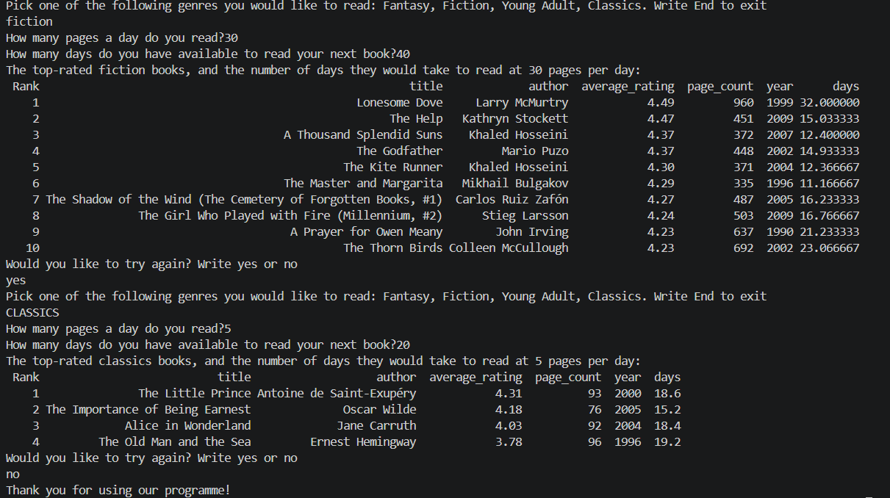

Algorithm Development Process

Planning: Analysis and Specification
In our algorithm development process, we followed Polya’s steps for problem-solving, and the computer problem-solving process described by Dale & Lewis (2019).
First, we analysed and specified the problem we wanted to solve: recommending high-rated books to users based on their genre preferences and time limitations. We considered what data we would need to answer these questions, and looked for the connections between the data and the problem:
- Book id: to uniquely identify and distinguish the records
- Book genre: to select the books in the user’s desired genre
- Book title, author, year of publication: to help the user identify the books we are recommending
- Average Goodreads rating: to find the highest rated books to recommend
- Ratings count: to check the reliability of the averages
- Page count: to calculate how long reading each book would take
- User's required genre, speed of reading, timeframe: to offer personalised recommendations
See the details of researching and cleaning the dataset here: Dataset
We found our existing data insufficient to solve our problem, as we were missing information about the user’s required genre, reading speed, and time limitations. We would request these inputs from the user in the algorithm.
Divide and Conquer
Next, we broke the problem down into smaller steps, to understand the logic behind the algorithm needed:
- Get user input for genre, speed of reading, and reading timeframe
- Select all the books from the dataset that are in the user's requested genre
- Calculate how long each of the selected books would take to read
- Filter the above books for those that fit in the user’s timeframe
- Sort the selected list of books by the average rating, in descending order and by their reading time ascending
- Display the recommendations: the top 10 rated books (or fewer, if not available), that can be read under the time given at the speed given, with their respective reading durations
Thus, we identified what the solution would look like, the data needed to reach it, and the steps to take to get there.
We decided that leaving the genre question open ("Which genre would you like to read?") would require a very large dataset, exceeding the scope of this project. We chose to limit the genre choices to 4 (Fantasy, Fiction, Classics, Young Adult) at this stage, to keep the dataset manageable. We picked the genres from the dataset that had the most books available in them, to be able to check the reliability of our top 10 sorting algorithm.
Pseudocode
After breaking the problem down into steps, we wrote pseudocode instructions following the plan.
Decisions
- We used arrays to process the 2D dataset. A searching algorithm goes through the books in the dataset, adding the ones that fulfilled the genre and the timeframe conditions to a new array. We added a new attribute variable to the selected records: days they take to read, calculated by dividing the page numbers by the user’s speed of reading (measured in pages per day).
- For the sorting of the selected books by average rating in descending order, and reading time in ascending order, we opted for a selection sort algorithm, since we only needed the first 10 highest rated books. The algorithm stops after the first 10 biggest rated books are found, avoiding unnecessary sorting, and making it faster and more efficient than sorting through the whole list.
- Originally, we wrote instructions for each step as outlined above, however, we later optimised the algorithm by uniting steps 2-4 into a single WHILE loop. By checking each records for both conditions before copying them in the new array, we save time and memory space.
Our decisions throughout the process were guided by a focus on efficiency and simplicity. While memory capacity and speed of computing might not be an issue at the current size of the project, if the dataset were to be expanded, such decisions could make a significant difference.
Testing and Optimising
We walked through the steps of the algorithm many times following the desk checking process (Dale & Lewis, 2019) to check all possible outcomes and logical steps. We revised and re-sequenced some parts, correcting nesting logical fallacies (infinite loops) and solving some of the identified issues and special cases as seen below:
| Issues | Solutions |
|---|---|
| What if the user enters an invalid input? | These could be typos, wrong datatypes, negative values, trailing white spaces, case-sensitivity issues when matching with dataset values. To account for these, we converted user inputs and genre data values to lower case and trimmed them of white speaces. We also ran an event controlled loop to check for invalid user inputs and wrong data types (non-numeric values for speed, timeframe). |
| What if there are no books that meet the filtering criteria? | We added a validation step checking if the filtered array is empty, upon which condition, a message is displayed to the user and they are offered to try again. We moved the top 10 sorting step inside this IF clause, to avoid the algorithm trying to sort through an empty array. We also accounted for the possibility of there being fewer than 10 books to sort in the conditions of our sorting and displaying steps. We placed the whole algorithm inside a while loop based on a boolean operator so it would run repeatedly until the user requests otherwise. |
| What if the time calculations result in fractional values? | While 4.5 days might be interpreted as 5 days needed to read a book, we decided that for the user's benefit we will keep the results as fractions, to give a closer approximation of the book's length. 0.5 days, for instance, could make a difference in the reader's final choice. |
Implementation phase: Python
After the pseudocode instructions were completed, we decided to translate our algorithm into the Python programming language, so that it could be executed and tested using our actual dataset.
For this step, we followed the logic described in the pseudocode, but updated the code respecting the strict syntax rules of the Python language.
Dataset Normalization and Analysis
To work with our csv dataset, we installed and imported the pandas library, used for reading, filtering, sorting, and analyzing datasets. Implementing pandas DataFrames along with built-in sorting and filtering operations streamlined the code and eliminated the need to write out the steps for the searching, filtering and sorting algorithms seen in the pseudocode. However, we decided to keep the detailed pseudocode version of the algorithm in our GitHub repository, to refer back to the logic behind the built-in pandas operations.
To match values correctly and allow for filtering, we made sure the dataset column names and data types aligned. Furthermore, we applied data preprocessing, cleaning, and string normalization to ensure data consistency and avoid errors. We checked for missing values and wrong data types in the dataset, converted all string values in the genres column and user inputs to lower case, checked for missing values, and stripped them of potential unnecessary white spaces for consistent formatting:
books["genre"] = books["genre"].fillna("").str.lower().str.strip()
books["page_count"] = pd.to_numeric(books["page_count"], errors="coerce"
Demonstration run of the algorithm

Maintenance phase: Limitations and Future Recommendations
We recognise the limitations of our algorithm in providing book recommendations given the limited dataset used. At this stage of the project, the algorithm can only recommend books from a limited number of genres. For future directions, we recommend extending and regularly updating the dataset to include new book releases and updated user review scores. Future versions could also include links to the Goodreads page of each recommended book to improve the user experience.
Reference: Nell Dale, & John Lewis. (2019). Computer Science Illuminated, 7th Edition. Jones & Bartlett Learning.